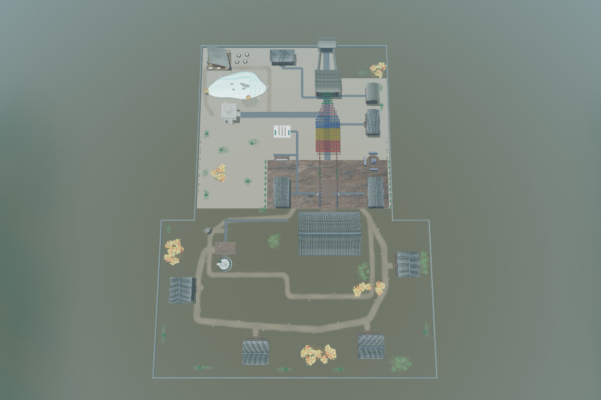
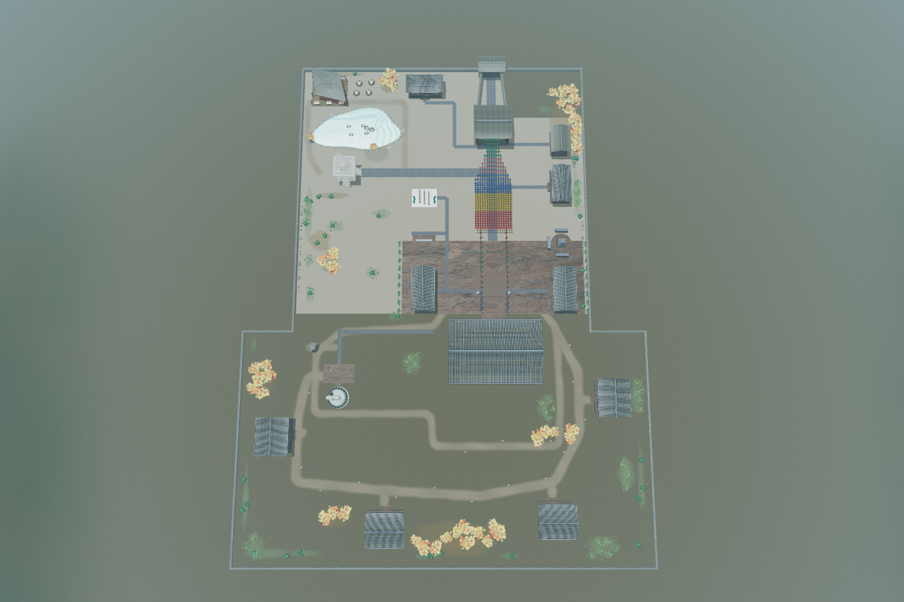
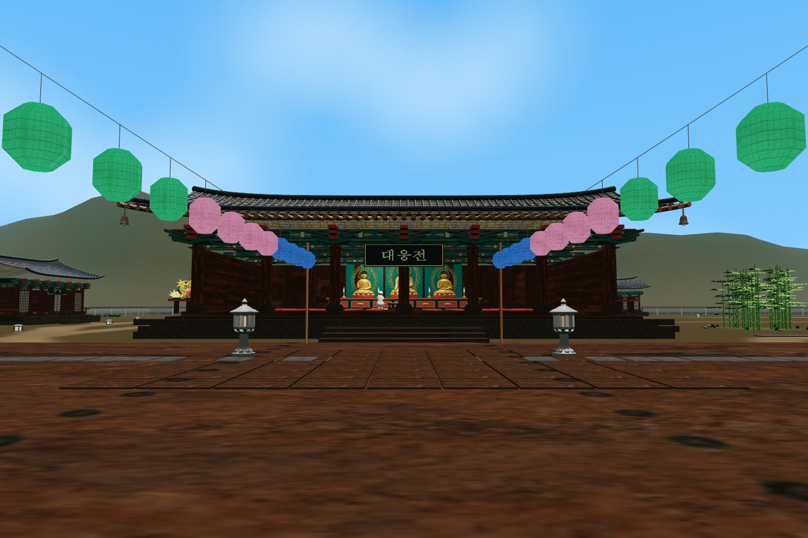
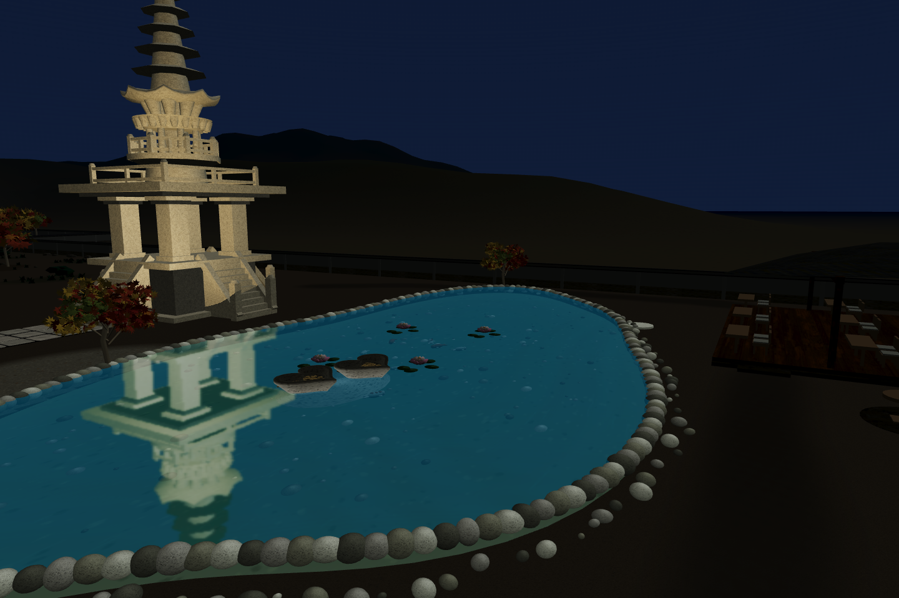

<meta charset="utf-8"><style>*{box-sizing:border-box}body{margin:0;background:#f5f3eb;color:#263f34;font-family:"Apple SD Gothic Neo",sans-serif}.sheet{width:1500px;padding:28px}h1{font-size:29px;margin:0 0 12px}p{font-size:18px;color:#687265;margin:0 0 18px}.row{display:grid;grid-template-columns:1fr 1fr;gap:18px;margin-bottom:22px}figure{margin:0}img{width:100%;display:block}figcaption{font-size:18px;font-weight:600;padding-top:8px}</style><section class="sheet"><h1>사찰 가장자리 조경 정리</h1><p>실제 맵 · 같은 시점 전후 비교 · 건물·아이템·중앙마당 유지</p><div class="row"><figure><figcaption>변경 전 · 전체 배치</figcaption></figure><figure><figcaption>변경 후 · 전체 배치</figcaption></figure></div><div class="row"><figure><figcaption>변경 전 · 넓은 중앙마당 유지</figcaption></figure><figure><figcaption>변경 후 · 넓은 중앙마당 유지</figcaption></figure></div><div class="row"><figure><figcaption>변경 전 · 연못·쉼터 야간</figcaption></figure><figure><figcaption>변경 후 · 연못·쉼터 야간</figcaption></figure></div></section>